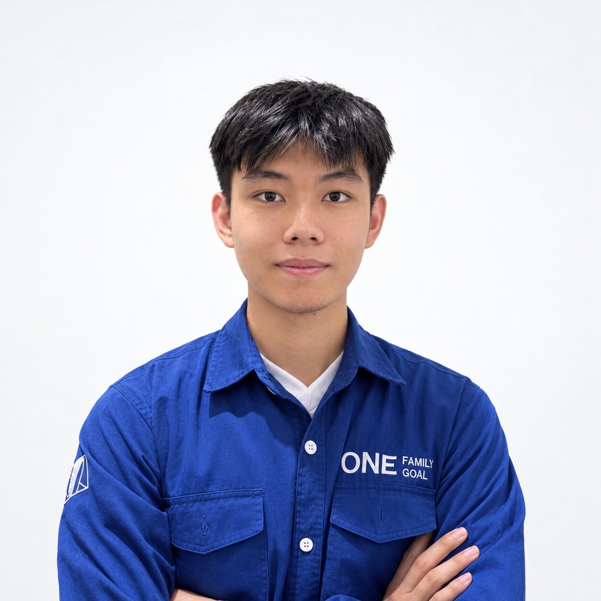

Skinical
Explainable skin lesion classification using local feature descriptors and Support Vector Machines, designed as an interpretable alternative to black-box approaches.
I'm Justin Lysander Setiawan, a Computer Science Undergraduate currently studying at BINUS University, taking on specialization in Artificial Intelligence.

A student portfolio focused on curiosity, experimentation, and building practical projects.
I enjoy taking technical concepts out of the classroom and turning them into projects I can actually understand, test, and improve.
My current interests sit around AI and software engineering, especially projects where technology can explain, automate, or improve a real-world process.
A few projects that represent my coursework, interests, and technical direction.
Explainable skin lesion classification using local feature descriptors and Support Vector Machines, designed as an interpretable alternative to black-box approaches.
A Mamdani fuzzy-logic system that determines fan speed from smoke concentration and room size, using rule-based inference and centroid defuzzification.
Database modeling and SQL work covering entity relationships, normalization, relational operations, transactions, indexing, and decomposition.
Natural Language Processing work exploring practical text-processing and machine-learning workflows, from preprocessing to model evaluation.
Technologies and concepts I work with through coursework and projects.
Bachelor of Computer Science · Coursework across AI, databases, computer vision, networking, algorithms, and software engineering.
Developing academic and personal projects while exploring how AI can become more practical, explainable, and useful.
Contact details for collaborations, projects, and internship opportunities.
Open to projects, collaborations, internships, and interesting ideas.